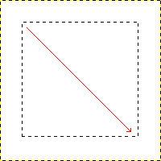
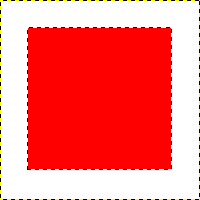

|

|
 |
| 10. Drawing Simple Objects |

|
Chapter 8. Combining Images |
GIMP is not designed to be used for drawing.[3] However, you may create shapes by either painting them using the technique described in Section 10.1, “Drawing a Straight Line” or by using the selection tools. Of course, there are various other ways to paint a shape, but we'll stick to the easiest ones here. So, create a new image and check that the foreground and background colors are different.
Figure 7.38. Creating a rectangular selection

The screenshot shows how a rectangular selection is created. Press and hold the left mouse button while you move the mouse in the direction of the red arrow.
Basic shapes like rectangles or ellipses, can be created using the selection tools. This tutorial uses a rectangular selection as an example. So, choose the rectangular selection tool and create a new selection: press and hold the left mouse button while you move the mouse to another position in the image (illustrated in Figure 7.38, “Creating a rectangular selection”). The selection is created when you release the mouse button. For more information about key modifiers see selection tools.
Figure 7.39. Rectangular selection filled with foreground color

The screenshot shows a rectangular selection filled with the foreground color.
After creating the selection, you can either create a filled or an outlined shape with the foreground color of your choice. If you go for the first option, choose a foreground color and fill the selection with the Bucket Fill tool. If you choose the latter option, create an outline by using the Stroke Selection menu item from the menu. If you're satisfied with the result, remove the selection.